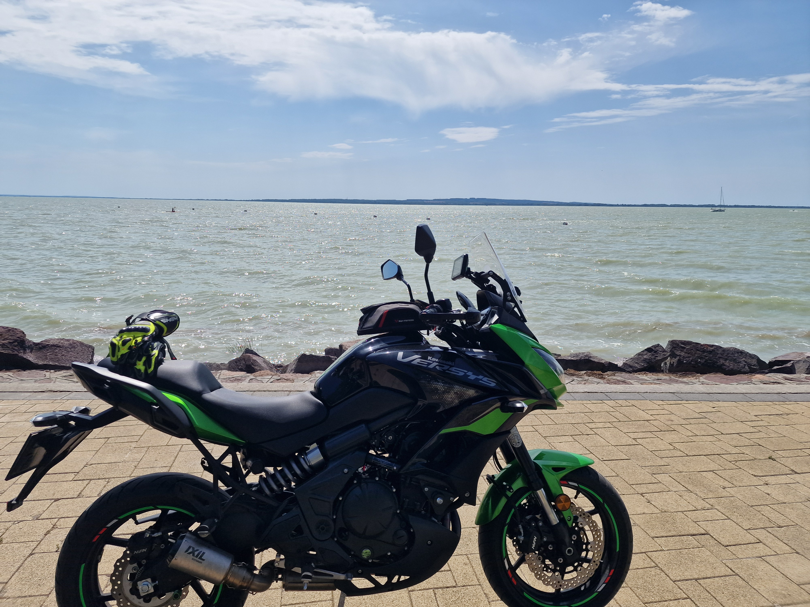
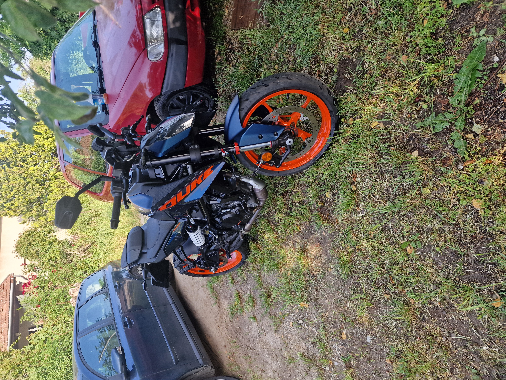

Jármű lista


Szerviz előzmények
| Dátum | Motor neve | Kilométeróra | Elvégzett művelet | Költség |
|---|
Költségek járműre lebontva
Összköltség: Ft
Kawasaki Versys 650 Ft
KTM Duke 125 Ft
Szerviznapló


| Dátum | Motor neve | Kilométeróra | Elvégzett művelet | Költség |
|---|
Kawasaki Versys 650 Ft
KTM Duke 125 Ft